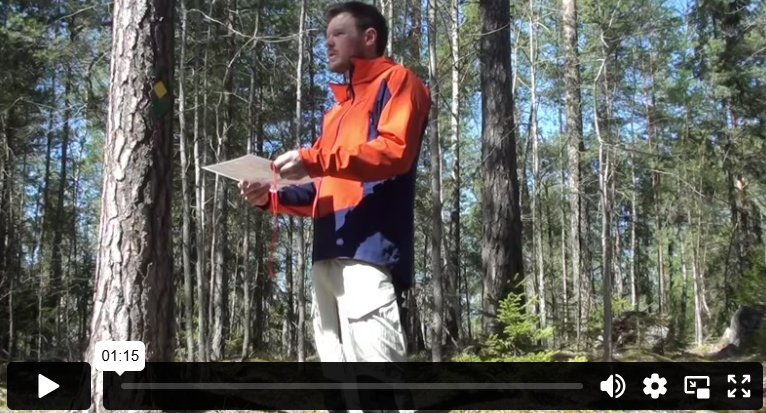

تناسب الخريطة

مطابقة الخريطة تعني تدوير الخريطة بحيث تتوافق مع الواقع. لقد تعلمت سابقًا أن الخريطة هي صورة للواقع كما يُرى من الأعلى. ولكي تكون دقيقة، يجب تدوير الخريطة في الاتجاه الصحيح. ومن الأفضل استخدام البوصلة للقيام بذلك. سنتناول كيفية القيام بذلك لاحقًا في هذا القسم.
يمكن أيضًا مطابقة الخريطة بدون بوصلة، ولكن يجب أن تعرف موقعك على الخريطة. بعد ذلك، تقوم بتدوير الخريطة بحيث تتطابق مع الواقع. ما تراه أمامك في الواقع يجب أن يكون أيضًا أمامك على الخريطة، وما هو على يسارك في الواقع يجب أن يكون أيضًا على يسارك على الخريطة، وهكذا.
قبضة الإبهام
لكي يكون من الأسهل عليك العودة إلى الموقع الذي كنت فيه آخر مرة على الخريطة، يمكنك استخدام طريقة "قبضة الإبهام". وهذا يعني أنك تطوي الخريطة، وتضع ظفر إبهامك على الموقع الذي تتواجد فيه، وتبقيه هناك حتى تنظر إلى الخريطة مرة أخرى. بعد ذلك، تحدد نقطة واضحة أمامك يمكن رؤيتها بسهولة على الخريطة. وعندما تصل إلى تلك النقطة، تحرك إبهامك إلى موقعك الجديد على الخريطة.